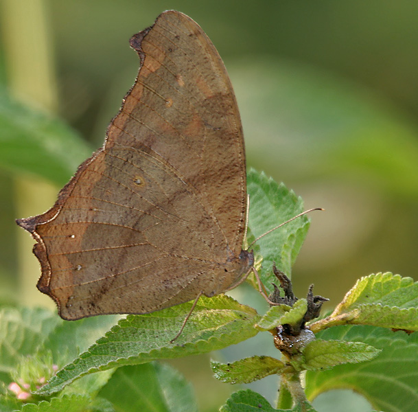

COMMON EVENING BROWN
Melanitis leda

Kingdom:Animalia
Phylum:Arthropoda
Class:Insecta
Order:Lepidoptera
Family:Nymphalidae
Genus:Melanitis
Species:M.leda
Melanitis leda, the common evening brown, is a common species of butterfly found flying at dusk. The flight of this species is erratic. They are found in Africa, South Asia and South-east Asia extending to parts of Australia.
The wings have falcate (sickle-shaped) termen (outer margin), more so in the female. On the upperside, the wings are dark brown with a large sub-apical patch which is black with two white spots embedded and shaded with orange brown on the inner side. On the underside, both wings differ markedly between the wet season and dry season forms. In the wet season form, the wings are bluff or greyish brown, bearing series of transverse striae in dark brown and there is a series of submarginal black eye-spots which are white-centred and yellow-ringed. In the dry season forms, the wing markings are more cryptic and the submarginal spots are less prominent, reduced in size or even obsolete. In some specimens, the markings on the wings exhibit drastic contrast between (very) dark brown and (very) pale brown patches.
Worldwide, the Common Evening Brown utilizes a number of larval host plants in the Poaceae family, including Oryza sativa (Asian Rice) and Zea mays (Maize). In Singapore, so far only the grass species, Megathyrsus maximum (Guinea Grass), has been identified its larval host. The caterpillars feed on leaves of the host plant, and tend to rest lengthwise on the underside of a grass blade during pauses between feeds. The caterpillars are gregarious and often feed and rest together (in a neat row) on the leaf underside. The eggs are laid in small clusters (clusters of 2, 3 and 6 have been observed)